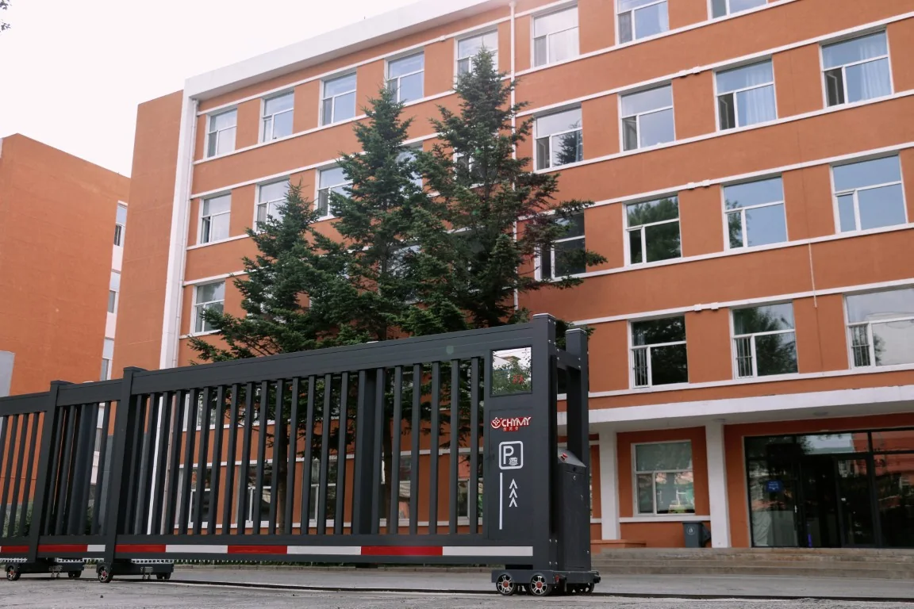
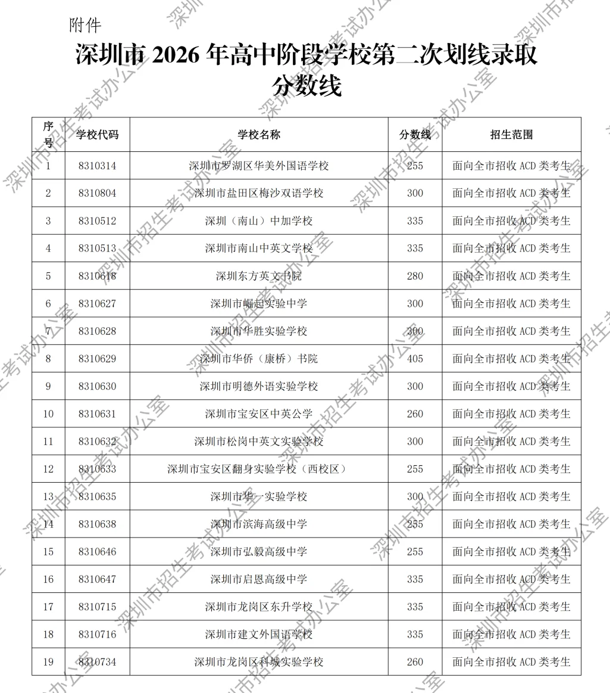
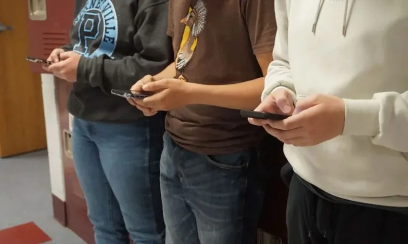
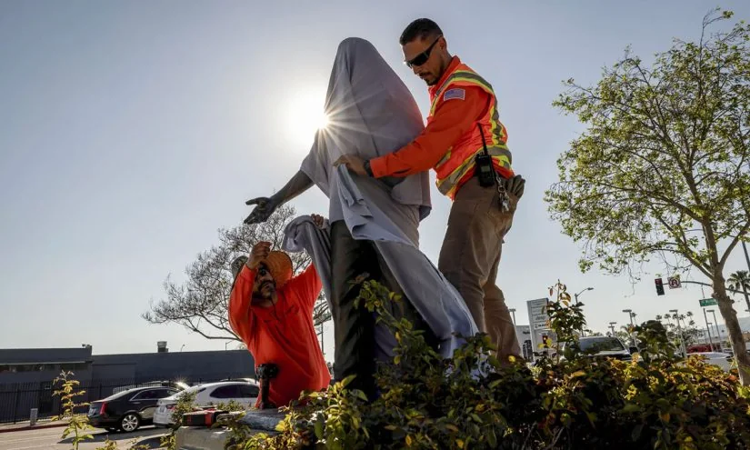

01
南山清北粒子物理暑期学校：基础科学的人才摇篮
第十四届南山清北粒子物理暑期学校在山东大学举办，为青年学子提供了接触前沿物理的机会。
近日，第十四届南山清北粒子物理暑期学校在山东大学举行。这项活动由清华大学、北京大学等高校联合举办，旨在为对粒子物理感兴趣的大学生和研究生提供暑期培训。课程内容涵盖粒子物理的前沿理论、实验方法以及最新研究进展，由领域内的专家授课。
这类暑期学校对参与者的影响是深远的。对于学生而言，这是难得的学习机会，可以接触到课本之外的前沿知识，与顶尖学者面对面交流，甚至可能激发未来的研究方向。对于高校而言，这也是选拔和培养后备科研人才的重要途径。
然而，这类机会并非人人可得。通常需要申请和选拔，竞争激烈。这反映了教育资源的不均衡，但也激励学生通过自身努力争取机会。对于无法参加的学生，也不必气馁，现在网络上有许多公开课和讲座资源，同样可以学习前沿知识。
对于有志于基础科学的学生，我的建议是：首先，扎实掌握基础知识，这是进入前沿领域的基石。其次，主动寻找学习资源，包括线上课程、学术讲座、暑期学校等。最后，保持好奇心和耐心，科研之路漫长，但每一步积累都有意义。对于家长，可以鼓励孩子探索兴趣，但不要过度施压，兴趣是最好的老师。
伊恩的观察
基础科学是技术创新的源泉。暑期学校虽然门槛高，但学习的大门永远敞开。利用好公开资源，保持热爱，每个人都能在科学探索中找到自己的位置。
02
城市轨道交通培训学校口碑调查：职业技能教育的信任危机
一篇关于城市轨道交通专业技能培训学校口碑的文章引发关注，提醒公众警惕培训机构的“套路”。

近期，一篇题为“城市轨道交通专业技能培训学校口碑，零套路不踩坑优选攻略”的文章在网络上传播。文章指出，当前市场上存在一些培训学校夸大宣传、收费不透明、教学质量参差不齐等问题，并提供了选择学校的建议。
这类培训学校主要面向希望进入城市轨道交通行业就业的人群，比如想成为地铁司机、站务员、检修工等。对于求职者来说，选择一家靠谱的培训学校至关重要，因为这关系到他们能否学到真本领，以及能否顺利就业。然而，信息不对称使得很多人容易上当受骗。
文章中提到的一些“套路”包括：承诺包就业但实际推荐的工作与承诺不符；收费后课程缩水；师资力量名不副实等。这些行为不仅损害了学员的利益，也破坏了整个行业的信誉。
对于有意向参加职业培训的人，我的建议是：首先，核实学校的资质，查看教育部门或人社部门的备案信息。其次，多方了解口碑，可以通过网络评价、校友反馈等渠道。再次，签订合同时仔细阅读条款，特别是关于退费、就业承诺的部分。最后，不要轻信“速成”、“包过”等宣传，技能学习需要时间和实践。对于整个行业，也需要加强监管和自律，建立更透明的评价体系。
伊恩的观察
职业技能培训是提升就业能力的重要途径，但选择需谨慎。擦亮眼睛，多方核实，避免被“套路”，才能让培训真正成为职业发展的助力。
03
深圳公布高中第二次划线录取分数线：升学路径的再平衡
深圳近日公布了高中阶段学校第二次划线录取分数线，为未被首批录取的考生提供了新的机会。

8月2日，深圳公布了高中阶段学校第二次划线录取分数线。这是继首次划线之后，针对部分未完成招生计划的学校进行的再次录取。对于考生和家长来说，这意味着一些原本可能落榜的学生，有机会进入高中阶段学校继续学习。
这项政策主要影响的是那些在第一次录取中未能如愿的考生。他们可能因为志愿填报不当、分数略低等原因，与心仪学校失之交臂。第二次划线录取为他们提供了补救的机会，但也存在不确定性：可供选择的学校和专业可能有限，且竞争依然激烈。
从更宏观的角度看，这种分批录取机制体现了升学路径的灵活性。它提醒我们，一次考试并不能决定一切，教育系统提供了多种选择和调整的空间。但同时也暴露出一些问题，比如信息不对称，部分家长可能不了解第二次录取的流程和机会，导致错失良机。
对于考生和家长，我的建议是：首先，密切关注官方发布的录取信息，了解第二次划线的具体学校和专业。其次，合理评估自身情况，不要盲目追求热门学校，而是结合兴趣和实际分数做出选择。最后，如果仍然未能被录取，也不要灰心，职业教育、成人高考等途径同样可以通向成功。重要的是保持积极心态，相信条条大路通罗马。
伊恩的观察
升学不是一锤定音。第二次划线录取提醒我们，机会总是留给有准备的人。家长和孩子都应保持信息敏感，同时学会在不确定性中做出理性选择。
04
伊利诺伊州签署校园手机禁令：课堂专注力的回归
从2027-2028学年起，伊利诺伊州所有公立学校将实施“从上课铃到下课铃”的手机禁令，除非获得特别许可。

伊利诺伊州州长普利兹克近日签署了一项法案，要求全州公立学校在2027-2028学年开始前，实施全面的手机禁令。这意味着，学生在校期间，从早上第一节课到下午最后一节课，都不能使用手机或其他个人电子设备，除非得到特别允许。这项政策的目标很明确：消除手机带来的干扰，让师生把注意力集中在学习上。其实，很多学区此前已有类似规定，但这次是首次以州法律的形式统一要求。
这项政策的影响面很广。对学生来说，他们需要适应没有手机陪伴的校园生活，这可能会让一些学生感到不适，但也可能帮助他们更专注于课堂，减少分心。对教师而言，课堂管理可能会变得相对容易，但如何设计更有吸引力的教学活动，让学生不依赖手机也能保持兴趣，也是一个新的挑战。对家长来说，他们需要重新考虑与孩子的联系方式，比如通过学校办公室传达紧急信息。
任何政策都有利有弊。支持者认为，减少干扰能提升学习效率，改善学生的心理健康，因为减少了社交媒体带来的焦虑。反对者则担心，完全禁止手机可能在某些紧急情况下带来不便，也剥夺了学生使用数字工具学习的机会。此外，执行层面也存在难题，比如如何检查学生是否违规，以及如何处理违规行为。
对于家长和学生，我的建议是：首先，理解政策背后的善意，它不是惩罚，而是为了创造一个更专注的学习环境。其次，可以主动与学校沟通，了解具体的执行细节和例外情况。最后，在家中也尝试设定一些“无手机时段”，比如晚餐时间或学习时间，帮助孩子养成自律的习惯。长期来看，这有助于培养孩子的专注力和时间管理能力，这些能力在未来的学习和工作中都至关重要。
伊恩的观察
手机禁令不是目的，而是手段。它提醒我们，在数字时代，保护专注力是一种需要刻意练习的能力。家长可以借此机会，与孩子一起制定家庭数字使用规则，共同营造深度学习的空间。
05
当英雄蒙尘：美国教师重新思考查韦斯教学
在针对劳工领袖塞萨尔·查韦斯的性侵指控曝光后，美国教师开始重新设计相关课程，引导学生进行批判性思考。

今年3月，《纽约时报》发布了一项调查，指控已故劳工领袖塞萨尔·查韦斯存在性侵行为。这一消息在教育界引起震动，因为查韦斯长期以来被视为民权英雄，在加州等地的学校课程中占据重要地位。许多教师开始重新思考如何教授查韦斯的故事。
例如，贝克斯菲尔德学院的教授奥利弗·罗萨莱斯在原本计划讲授农场工人运动的课上，临时换上了《纽约时报》的调查报道，包括联合农场工人联合创始人多洛雷斯·韦尔塔的证词。学生们反应强烈，用了“震惊”、“毁灭性”、“揪心”等词语。罗萨莱斯表示，他很高兴能在那个时刻与学生一起面对这一复杂的历史。
这一事件对教育的影响是深远的。它挑战了传统的英雄叙事，要求教师和学生面对历史人物的多面性。对于学生来说，这既是认知上的冲击，也是批判性思维训练的契机。他们需要学会区分个人成就与个人过失，理解历史评价的复杂性。
对于教师，我的建议是：在涉及历史人物时，不要回避争议，而是提供多元视角，引导学生进行理性分析。可以组织讨论，让学生表达感受和观点，同时提供可靠的历史资料。对于家长，也可以借此机会与孩子谈论如何全面看待历史人物，培养独立思考能力。教育的目的不是塑造偶像，而是培养能够明辨是非的公民。
伊恩的观察
历史教学不应是简单的英雄赞歌，而应引导学生面对复杂真相。当英雄蒙尘，我们更需教会学生如何理性审视，这比记住一个完美形象更有价值。
无障碍文字记录
伊恩 你好，欢迎收听《伊恩每日·教育》。今天是2026年8月3日。最近，教育圈发生了不少事：深圳公布了高中第二次划线录取分数线，美国伊利诺伊州签署了校园手机禁令，还有教授们开始重新思考如何讲述一位民权英雄的故事。这些看似无关的事件，其实都指向同一个问题：在规则和变化面前，我们如何做出选择，如何继续成长。今天，我们一个一个来看。
伊恩 先看国内。8月2日，深圳公布了高中阶段学校第二次划线录取分数线。这意味着，第一次划线没被录取的考生，还有机会通过补录进入高中。这类补录信息通常由当地教育局发布，具体分数线因学校而异。对考生和家长来说，这既是机会，也是焦虑的来源。但我想说的是，无论结果如何，中考只是人生中的一个节点，不是终点。
听众 伊恩，我家孩子这次中考没考好，补录也没把握，感觉天都塌了，怎么办？
伊恩 我理解你的焦虑。但请先深呼吸。补录不是唯一的路，即使这条路走不通，还有职高、国际学校、复读等多种选择。重要的是，和孩子一起分析这次考试暴露的问题，是知识漏洞、心态失衡，还是策略失误。然后制定一个可行的计划。记住，一次考试定义不了你孩子的人生，你的支持才是他最大的底气。
伊恩 今天我们来聊一个可能影响很多家庭的话题。美国伊利诺伊州州长普利兹克签署了一项法案，要求全州公立学校在2027-2028学年开始前，实行“从上课铃到下课铃”的手机禁令。也就是说，学生在校期间，除非获得特别许可，否则不能使用手机或其他个人电子设备。这项法案的目标很明确：消除手机带来的干扰，让师生专注于学习。其实，很多学区已经有类似政策，但这次是州级立法，影响范围更广。
这项法案的签署时间是2026年7月28日，距离正式实施还有一年多。为什么给这么长的过渡期？因为学校需要时间来制定具体规则、通知家长、调整管理方式。法案并没有规定具体的处罚措施，而是把执行细节留给各学区。这意味着，不同学校可能会有不同的做法，比如有的学校可能要求手机统一存放，有的可能允许在午餐时间使用。
你可能会问，为什么州政府要介入？因为手机干扰已经成为一个普遍问题。有研究表明，学生在课堂上使用手机，不仅影响自己，也影响周围同学。老师也反映，管理手机使用占用了大量教学时间。但这项法案也引发了一些担忧。比如，家长担心紧急情况下联系不到孩子；学生可能觉得被剥夺了自主权；还有一些教育者认为，与其全面禁止，不如教会学生如何合理使用手机。
对普通家庭来说，这项法案意味着什么？首先，家长需要和孩子沟通，了解学校的具体规定。其次，孩子在校期间无法随时用手机联系，家长可能需要调整接送安排。更重要的是，家长可以借此机会和孩子讨论数字设备的使用边界，培养自律能力。
我的判断是，这项法案的出发点是好的，但效果取决于执行方式。如果只是简单禁止，可能会引发反弹；如果配合数字素养教育，可能带来积极改变。对于家长来说，与其焦虑，不如把它看作一个契机，和孩子一起制定家庭手机使用规则。毕竟，手机只是工具，如何驾驭它，才是我们真正需要学习的。
听众 手机禁令真的有用吗？我孩子总是偷偷带手机去学校，没收也没用。
伊恩 这是个好问题。禁令本身不是目的，而是手段。研究表明，手机确实会分散注意力，影响学习效率。但单纯禁止，可能会引发逆反心理。关键在于，如何让孩子理解为什么需要放下手机。你可以和孩子约定，在家也设立“无手机时段”，一起阅读、运动或聊天。当孩子感受到真实交流的乐趣，手机的魅力自然会降低。
伊恩 再说一个更复杂的教育故事。今年3月，《纽约时报》发布了一项调查，指控美国劳工领袖塞萨尔·查韦斯存在性侵行为。查韦斯是墨西哥裔美国民权运动领袖，联合农场工人联合会的创始人，一直被当作英雄来教。调查发布后，许多教师开始重新思考如何讲述他的故事。贝克尔斯菲尔德学院的教授奥利弗·罗萨莱斯，在当天正好要讲农场工人运动，他临时换掉了阅读材料，改用《纽约时报》的调查，包括联合创始人多洛雷斯·韦尔塔的证词。学生们用“震惊”“毁灭性”“灵魂震撼”来形容他们的感受。
伊恩 今年三月，《纽约时报》发布了一项关于劳工领袖塞萨尔·查韦斯的调查，指控他存在性侵行为。联合农场工人联合会的联合创始人多洛雷斯·韦尔塔作证说，查韦斯曾两次强奸她。消息传出的当天，贝克斯菲尔德学院的教授奥利弗·罗萨莱斯正要讲授关于奇卡诺人历史的课程，主题恰好是农场工人运动。他临时换掉了关于德拉诺葡萄罢工的阅读材料，改用这篇调查报道。课堂上，学生们用“震惊”“毁灭性”“揪心”“灵魂震颤”来形容自己的感受。罗萨莱斯说，他很庆幸当时和学生们在一起。
查韦斯是民权运动的象征，加州有他的纪念日，无数学校以他的名字命名。几十年来，他的事迹被简化成英雄叙事：非暴力抗争、为移民劳工争取尊严。现在，教师面临一个难题：如何讲述一个既有伟大贡献又有严重过错的人？
这不是简单的“好人还是坏人”的问题。查韦斯的组织为底层劳工争取了实打实的权益，这些成就不应被抹去。但指控同样不能被忽视，尤其是来自一位长期并肩战友的证词。教师需要让学生在理解历史复杂性的同时，不陷入虚无——既不全盘接受，也不全盘否定。
这对学生的影响是深远的。过去的教育倾向于塑造完美偶像，但现实中的人往往充满矛盾。当学生发现偶像也有阴影时，可能会感到幻灭，甚至对历史本身产生怀疑。但如果教师能引导他们直面这种矛盾，他们反而能学会更成熟的思考方式：评价一个人，要看他的全部行为，而不是单一标签。
对教师来说，这需要极大的勇气和技巧。他们要在课堂上讨论性侵指控，同时不让学生感到不适或过度情绪化。一些教师选择在讲授查韦斯时，明确区分他的公共成就和私人行为；另一些则引入多方观点，让学生自己权衡。没有标准答案，但重要的是，课堂不再是一个只传递“标准叙事”的地方。
这件事也提醒我们，教育的目标不是培养对权威的盲从，而是培养独立思考的能力。当学生学会质疑、追问、从不同角度审视历史人物时，他们才真正具备了批判性思维。这比记住一个英雄的名字更有价值。
对于家长和普通读者，这或许是一个契机：和孩子讨论历史时，不必回避复杂性。你可以问：“你觉得一个人做了好事，就能抵消他的过错吗？”这样的对话可能不舒服，但正是这种不舒服，推动着认知的成长。
历史从来不是黑白分明的。承认查韦斯的贡献，同时正视对他的指控，不是背叛，而是对真相的尊重。教师们在做的，正是把这种复杂性交给下一代，让他们自己判断。这很难，但很重要。
伊恩 今天想和你聊一个听起来有点遥远、但其实很值得关注的消息。山东大学最近举办了第十四届南山清北粒子物理暑期学校。这个暑期学校，从名字就能看出来，是面向物理学子的，尤其是对粒子物理感兴趣的学生。它由南山、清华、北大这些机构联合举办，今年已经是第十四届了。
先说说这个暑期学校是干什么的。它不是一个普通的夏令营，而是一个高强度的学术训练营。参加的学生，大多是物理相关专业的本科生和研究生。在几周的时间里，他们会听前沿讲座、做研讨、甚至参与一些小型的研究项目。内容涉及粒子物理的各个方向，比如标准模型、暗物质、中微子等等。
你可能想问，这和我有什么关系？我又不是学物理的。其实，这类暑期学校的存在，反映了一个更大的趋势：顶尖科研资源的开放和下沉。过去，你想接触前沿物理，可能得等到读研究生、进了好实验室才行。但现在，通过这样的暑期学校，本科生就有机会和顶尖学者面对面，了解这个领域最前沿的问题是什么。
这对学生来说，意味着什么呢？首先，它提供了一个试错的机会。很多学生选专业时是懵的，不知道自己是不是真的喜欢科研。参加一次暑期学校，能让你在短时间内高强度地接触一个领域，看看自己是不是真的感兴趣、能不能坐得住冷板凳。其次，它也是一个社交网络。你在那里认识的同学、老师，可能就是你未来学术道路上的伙伴和引路人。
但我也得提醒你，这类机会并不是人人都能轻易获得的。它通常有选拔门槛，需要申请、需要推荐，竞争很激烈。所以，如果你或者你身边的孩子对物理感兴趣，不要只盯着这一个项目。类似的暑期学校、科研实习，很多高校和研究所都在办。关键是提前关注、提前准备。
更重要的是，这件事提醒我们，学习不只是在课堂里。真正的成长，往往发生在课堂之外，在你主动去探索、去连接的时候。哪怕你学的不是物理，这个道理也一样。去参加一个你感兴趣的工作坊，去听一场跨学科的讲座，去认识一些和你不同背景的人。这些经历，可能会在未来的某一天，成为你意想不到的助力。
所以，别觉得这类新闻离你很远。它其实在告诉我们：机会一直都在，关键是你有没有准备好去抓住它。好了，今天就说这些，我们明天见。
伊恩 今天想跟你聊一个很现实的话题：怎么选一所靠谱的职业技能培训学校。最近我看到一篇关于城市轨道交通专业技能培训学校口碑的报道，标题里写着“零套路不踩坑优选攻略”。这类内容在网络上很多，但往往真假难辨。作为普通人，我们最怕的就是花了钱、花了时间，最后学不到东西，甚至拿到的证书不被认可。
先说说事实。城市轨道交通专业，对应的是地铁、轻轨这类城市公共交通系统的运营和维护岗位，比如站务员、售票员、安检员，还有信号、通信、供电等设备的维护人员。随着越来越多城市开通地铁，这个行业确实需要大量一线技术工人。所以，相关的技能培训学校也应运而生。
但问题在于，这个行业门槛不高，学校质量参差不齐。有些学校是正规的，有实训基地，有行业合作，毕业生能对口就业；但也有不少学校，宣传很诱人，实际教学却跟不上，甚至存在虚假承诺。
那怎么分辨呢？我建议你从几个方面入手。第一，看学校的办学资质。正规的学校，在当地教育部门或人社部门有备案，你可以去官网查，或者直接打电话问。第二，看实训设备。城市轨道交通专业，实操很重要。如果学校连模拟驾驶舱、信号系统都没有，那教学效果肯定大打折扣。第三，看师资。老师有没有行业经验，是专职还是兼职，这些都可以问。第四，看往届毕业生的去向。如果学校能提供真实的就业数据，甚至能让你联系到毕业生，那可信度会高很多。
另外，要警惕那些承诺“包就业”的学校。就业是双向选择，学校能提供推荐和指导，但不可能保证你一定找到工作。如果对方把话说得太满，你反而要小心。
还有一点，就是费用。正规学校的收费是透明的，会写明学费、教材费、实训费，不会中途加收。如果遇到那种先交定金、再交各种名目费用的，基本可以判断是套路。
最后，我想说，选择技能培训，本质上是给自己投资。你投入的不只是钱，还有时间。所以，一定要多比较、多实地考察，不要轻信广告。如果你身边有从事这个行业的人，多问问他们的意见，比看一百篇攻略都管用。
希望你能找到一所真正适合你的学校，学到真本事，顺利进入这个行业。我是伊恩，我们明天见。
伊恩 今天的故事，从深圳补录到手机禁令，再到英雄的阴影，看似无关，其实都在讲一件事：我们如何面对变化和不确定性。补录是规则内的机会，手机禁令是规则内的约束，而查韦斯的案例是规则外的冲击。无论是学生、家长还是教师，我们都需要在变化中保持清醒，在复杂中寻找方向。
伊恩 最后，我想说，教育不是一条直线，它充满了曲折和意外。但正是这些曲折，让我们成长。感谢收听《伊恩每日·教育》，我们明天见。